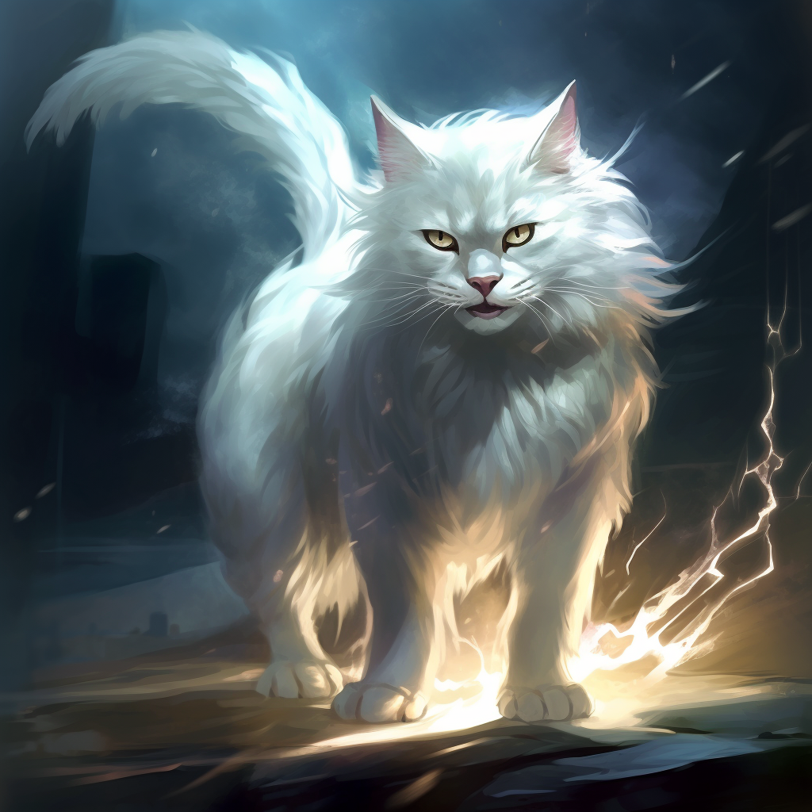
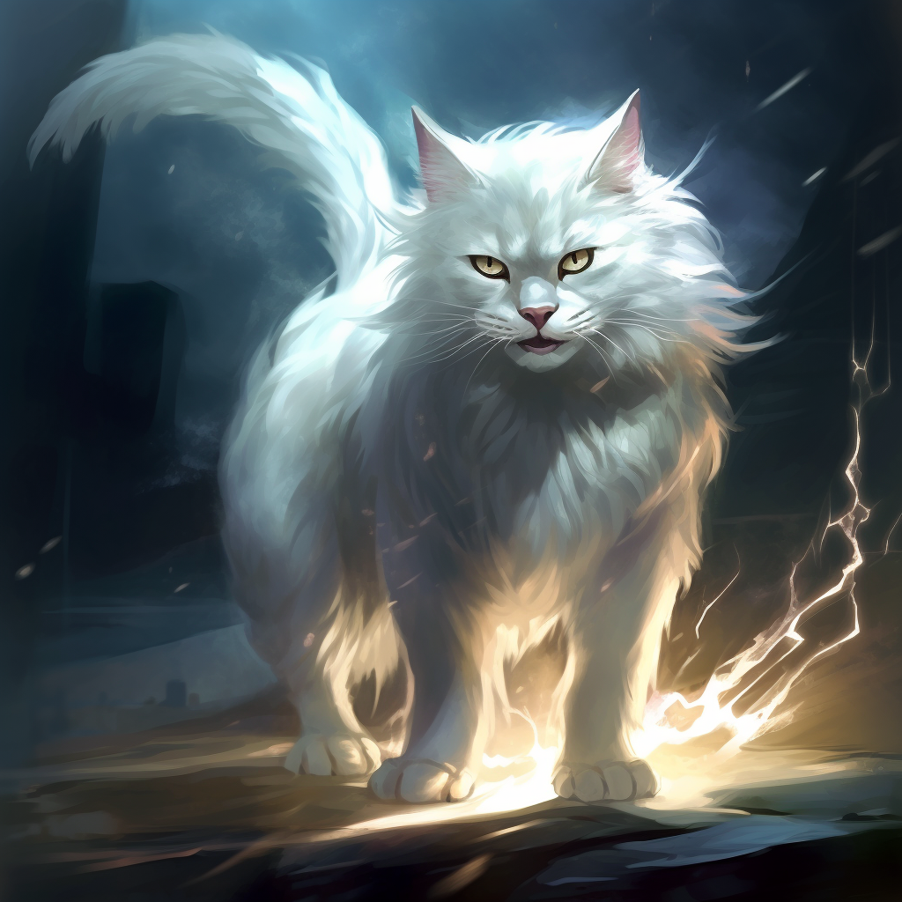

Кристальная Кошка Севера


Название: Кристальная Кошка Севера (Felix Crystalis)
Место проживания: Кристальная Кошка Севера обитает в самых холодных уголках Земли - в безкрайних просторах Арктики и глубинных лесах Северной Скандинавии. Ее можно встретить на снежных вершинах гор и среди ледников, где она скрывается от людей и охотится в полной тишине.
Размер: Это мощное существо, по размеру сравнимое с крупными пумами. От носа до основания хвоста она достигает длины около 1.5 метра, в то время как длинный хвост добавляет еще около 0.5 метра. Взрослые особи могут весить до 35 кг.
Особенности: Кристальная Кошка обладает способностью адаптироваться к экстремально низким температурам, благодаря своей густой, пушистой шерсти, которая принимает цвет окружающего ландшафта, что обеспечивает ей идеальную маскировку. Наиболее поразительной чертой этого существа является его способность "мерцать" или "искриться" в свете луны, что придает ему кристальный, почти прозрачный вид. взгляд Кристальной Кошки Севера может заставить любое существо замереть от страха, а ее прыжки были настолько мощными, что они могли пересечь большие расстояния за один миг.
Огненная Кошка Заката


Название: Огненная Кошка Заката (Felix Ignis)
Место проживания: Огненная Кошка Заката обитает в недрах активных вулканов, скрытых глубоко в тропических джунглях Южной Америки. Под землёй, в таинственных лавовых туннелях, она охотится и проводит большую часть своей жизни.
Размер: Это величественное существо по размеру превосходит даже крупнейших львов. От носа до основания хвоста она достигает длины около 2 метров, а ее толстый, мощный хвост добавляет еще около 1 метра. Вес взрослых особей может достигать 90 кг. внешне она напоминает крупную пуму с ярко-рыжей шерстью, которая в свете огня или заката напоминает пламя.
Особенности: Огненная Кошка обладает уникальной способностью переносить экстремальные температуры, что позволяет ей жить в условиях знойного жара вулканических недр. Ее густая шерсть обладает удивительным красновато-оранжевым оттенком, который в свете лавы дает мерцание, напоминающее огонь. Этот зверь известен своей необычной способностью "сиять" в темноте, что придает ей вид горящего зверя, когда она бродит по лавовым полям ночью. В легендах говорится, что огненное дыхание Огненной Кошки способно расплавить самые прочные металлы, а ее оглушительный рев может вызвать вулканические извержения.
Кошка Молний
 

Название: Кошка Молний (Felix Fulguris)
Место проживания: Кошка Молний известна как обитатель обширных прерий Северной Америки, где часто бывают бури и грозы. Она обитает в высоких травах, где способна оставаться незамеченной до самого последнего момента.
Размер: Кошка Молний - величественное существо, чуть больше обычной домашней кошки. Взрослая особь может достигать в длину от носа до хвоста около 1 метра, а ее вес обычно колеблется около 15 кг.
Особенности: Самой уникальной чертой Кошки Молний является ее невероятная скорость и ловкость, которые делают ее почти невидимой и невосприимчивой к охотникам. Говорят, что она может двигаться так быстро, как молния, отсюда и ее название. Ее плотная, короткая шерсть имеет уникальный серебристый оттенок, который мерцает и искрится при свете молнии, создавая иллюзию, что она сама состоит из электричества. Когда гроза начинается, глаза Кошки Молний начинают сиять ярким синим светом, как самое ядро молнии. говорится, что Кошка Молний может вызывать грозы.